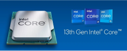

Концерном «Росэнергоатом», входящим в структуру «Росатом», начато тестирования российских компьютеров «Бобер» построенных на процессорах «Байкал-М» и производящихся отечественным брендом Delta Computers. После получения результатов данных тестов будет принято решение о внедрении «Бобров» в цифровую инфраструктуру филиалов «Росэнергоатома».

В конце 2023 будет представлено 14 поколение процессоров Intel под кодовым названием Meteor Lake. Новая платформа будет использовать сокет LGA1851, и откажется от памяти типа DDR4, полностью перейдя на DDR5. Ожидается новая архитектура как больших, так и малых ядер. Судя по утечкам, рост IPC больших ядер составит около 15-25%, а малых — на уровне 10-15%.